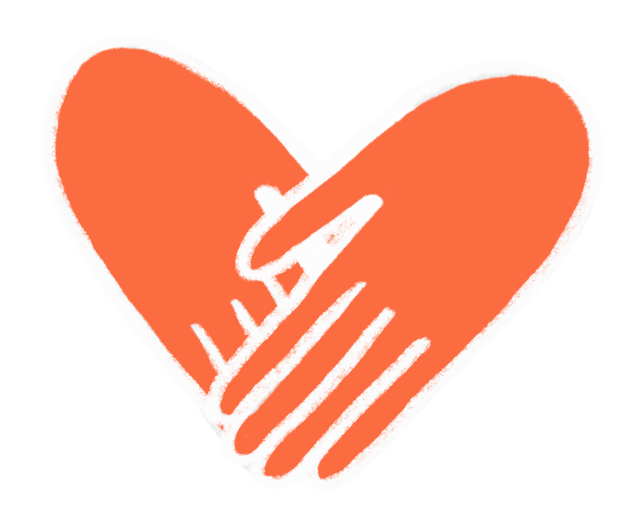
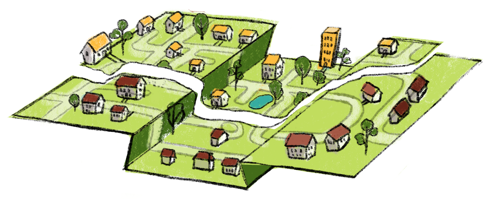
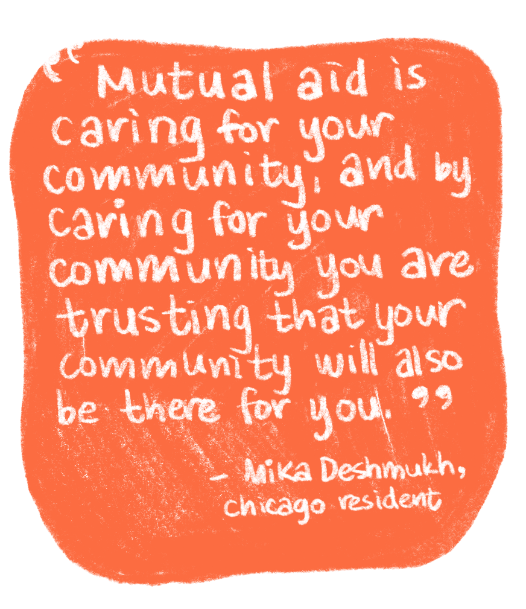

.svg)
Braving the Evanston cold, members of Students Organizing for Labor Rights (SOLR) huddled outside of the Davis Purple Line Station around a single table, hoping to collect Personal Protective Equipment and winter essentials for Northwestern University’s service workers. They were unaware of how many donations they would receive by the end of the day.
The afternoon of Nov. 13, 2020 was SOLR’s first Mutual Aid Supplies Distribution event. Student members laughed off the sharpness of the wind and the noise of nearby buses to keep their spirits high. Passersby who stopped, curious as to why students were standing in the cold, were met with an introduction to SOLR’s mutual aid efforts. The tabling, SOLR members told them, was to support the workers who had been furloughed by the University last March.
While the event faced a slow start, by the end of the three-hour long fundraiser, the table was covered with donations that spilled onto the sidewalk. Items ranged from handmade hats and scarves donated by students from Knitwestern, Northwestern's knitting club, to lightly-used coats and blankets — equipping SOLR with supplies to better support workers who, at the time of the event, had been laid off for eight months. Tabling events, along with petitions and mutual aid funds, all contribute to SOLR’s mutual aid efforts to support community members.
Mutual aid, in its simplest terms, is a mutually beneficial, voluntary exchange of goods and services rooted in community care. Organizations like SOLR turn to mutual aid when existing institutions fail to meet the needs that they identify in their communities.
The practice of mutual aid has always been tied to social justice movements, especially those concerning Black liberation. When a population is in need, most commonly one that has been historically and systemically oppressed, mutual aid works around existing barriers to provide a support network. Today, mutual aid has become integral to day- to-day functioning of organizations at Northwestern and in cities across the U.S., offering alternatives to the less efficient systems of support that exist within the status quo.
Wildcats give back
When Weinberg third-year Abbey Zhu joined her high school’s Equity and Inclusion Team, she expected an opportunity to push for meaningful policy changes to her school’s environment. Instead, she found herself endlessly discussing the harmful culture rather than helping to remedy it.
“It was really infuriating to know I was part of this superficial team that had no power, but it also felt like there were no other avenues to force the school to acknowledge and reckon with its racism and realize that change was necessary,” Zhu says. “I wanted to expose how racist and violent my classmates, teachers and school were, but obviously everything we did as a team was superficial.”
It wasn’t until Zhu arrived at Northwestern that she was able to seek out organizations that embodied her values, and by her second year, she became a committed member of SOLR.
“I joined SOLR honestly because a lot of my friends were in SOLR in my first year at Northwestern ... and because they’re doing such integral work on campus to make sure our service workers are being treated with dignity,” Zhu says.
Although a March 2020 news release by the University claimed that they would use federal funds to compensate workers, workers say they never saw any funding distributed to them after they lost their income, health insurance and benefits. This led SOLR to step in.
“There’s only so much SOLR can do, which is why we’re asking Northwestern and Compass to do more because they are multi-billion dollar corporations,” Zhu says.
According to Zhu, workers are still in need of greater financial support in order to fulfill basic needs like rent, food and utilities. Now, she says students and other members of the community must take it upon themselves to support workers until Northwestern takes accountability for its actions.
SOLR has worked in coalition with other Northwestern organizations, like the Northwestern University Graduate Workers (NUGW), to advance both of their causes. According to NUGW’s website, their organization is an “antiracist, feminist labor union that advocates for better working and living conditions for all graduate workers,” with a focus on “historically excluded and underrepresented graduate students.” NUGW has attempted to push for change by petitioning the University’s administration. It now works with other student-run campus organizations like SOLR and Northwestern University Community Not Cops, a student organization advocating for the abolition of policing on Northwestern’s campus and investment into the student body and surrounding communities.
Some members of NUGW have previous experience with mutual aid networks, including fourth-year PhD candidate Ally Reith. Reith says she and her partner dedicated themselves to helping people across Chicago prior to joining NUGW, explaining that their involvement wasn’t necessarily tied to a specific organization, but rather to larger community networks in the city. Whenever she had the chance, Reith would use her car to pick up items, such as furniture or produce, and drop them off to any residents that requested them.
“The simplicity of it for me speaks to the value of community care and justice, and recognizing that if I have something I can give, I’m sure there’s someone that has the need for it,” Reith says. “Having a mutual aid network removes all of the bureaucratic red tape and access barriers. It simplifies that exchange in a way that I think is beautiful.”
Reith became involved with NUGW last March and says that the organization has mutual aid embedded in its infrastructure, since serving the collective and providing relief to the community are some of the union’s main goals.
“Being able to give immediate relief to folks that need it is one of the strongest elements of our organization, in my opinion,” Reith says. “We are able to give immediate relief and sustain pressure on the University because, of course, these things and services shouldn’t be on students to be providing. It’s the University’s job. So we exist to fill where they abandon us.”
City-wide mutual aid efforts
This June, amid the Black Lives Matter protests, Chicago resident Nita Tennyson opened her phone to a Facebook post that would ignite a powerful chain reaction. It was about baby formula. This particular post said that because of recent lootings, stores that would typically carry formula were either closed or stripped of supplies, making the product difficult to acquire. Tennyson has dreamed of providing care for her community since she was a child. Her career aspirations included becoming a youth probation officer, a teacher and the founder of a youth center. Whatever the future held, she wanted to give back to Englewood and Chatham, the neighborhoods she grew up in. The Facebook post was the push she needed to make her dreams a reality, which came in the form of her mutual aid organization, Nita’s Love Train. “What specifically made me start the Love Train was the day of the lootings, it was just a lot of negativity, a lot of bad things going on ... I had extra stuff so I was like, ‘There’s a lot of negativity. I should just go outside and be positive, so that’s what I’m gonna do,’” Tennyson says. The founding principle of Tennyson’s organization is to provide individuals and families throughout Chicago with immediate provisions they otherwise would not be able to afford, and the name is a reference to how each area she visits is like a “new stop to show people love.” The Love Train began as several local pop-ups where individuals could pick up the items they needed, though the winter weather caused Tennyson to switch to a delivery method. Typically, she delivers packages that contain a week’s worth of necessities, ranging from diapers and baby formula to blankets and clothes — all things she considers to be mutual aid. “Mutual aid could be books ... Mutual aid could be art,” Tennyson says. “Just because you’re giving people actual items doesn’t mean you’re not giving them as much love as you can, because people also need to have grievance circles, and healing circles, and hugs and all types of stuff because there’s a lot going on in our society.” Like Tennyson, Washington Heights resident Ahriel Fuller became involved with mutual aid as a direct response to the “opportunity desperation” she witnessed during the recent summer’s protests. Her mutual aid organization, now known as $$FREE.99, first started as a result of a donation collection she organized that flooded her mother’s home with supplies. As a result, Fuller began her own pop-up shop, centered around sustainability and providing free goods to those in need in her community. “I decided to come up with a solution. I didn’t even have a name for it first. I just started collecting supplies, Pampers, wipes, formulas, and that’s really what it started with ... I got a very great and heavy response from the community,” Fuller says. The $$FREE.99 Community Store, Fuller’s name for the initial pop-ups, formed as a result of the voluntary efforts of its organizer and her community. Fuller says that because people were willing to donate their time and cars and spread the word, the store was able to take off. Now, $$FREE.99 aims to provide individuals with basic essentials like feminine hygiene products, household cleaning products and goods for those raising babies and adolescents. “We can’t depend on this system to give us what we need, so let’s just do it for ourselves, do what we can,” Fuller says. “This is how every movement for Black bodies has been successful ... Without mutual aid, a lot of things in history wouldn’t have been accomplished. It’s a necessity.” Fuller wants to focus on making $$FREE.99 a more permanent establishment where sustainable practices can be encouraged. Those new systems would include recycling goods and incorporating brick-and-mortar trading posts — essentially store-fronts that allow residents to barter for goods and services rather than using credit or cash. “All throughout history our ancestors keep showing us that it’s gotta be us, that’s the only way we’re gonna be alright. We have to take care of us. That’s the only way we’re gonna get love — it’s if we love us,” Fuller says. While Tennyson’s and Fuller’s mutual aid efforts began due to social movements in the city, the coronavirus pandemic has acted as a catalyst for other mutual aid initiatives in Chicago. Since Illinois saw its first rise in coronavirus cases in March 2020, 23-year-old Logan Square resident Mika Deshmukh began actively searching for ways to support her community. So, when a local artist introduced her to The Love Fridge, a Chicago-based mutual aid organization, Deshmukh saw it as an act of fate to do work she had been passionate about since 2019: tackling food injustice. With 24 fridges in 18 neighborhoods across Chicago, The Love Fridge strives to battle food inequity by filling refrigerators with fresh produce and ensuring these fridges are attainable in both location and accessibility, allowing residents to take goods practically anonymously. “I think it’s this whole... difference in worldview: Are you thinking about your individual wealth and well-being and success, or are you thinking about your community’s wealth, well-being and success?” Deshmukh says. Deshmukh and other Love Fridge organizers have been able to form relationships with local residents and activists, contributing to The Love Fridge’s community care. Deshmukh says that because Love Fridges are either sponsored by local businesses, community centers or individual hosts that are already engaged with community organizing efforts in their neighborhoods, the organization can successfully engage in community care. “Nonprofits are often centered around philanthropy or charity, and that’s not something we want to do,” Deshmukh says. “We want it to be a sustainable relationship, as we say, ‘nourishing our community.’ We want to make our initiatives have a life cycle and be sustainable in the communities.” This past December, the organization launched their “Full Circle” initiative, where they partnered with local community restaurants and chefs to provide prepared meals in the fridges. This way, houseless residents can access nourishing food, and restaurants that have struggled as a result of the pandemic also receive support. “Mutual aid is caring for your community, and by caring for your community you are trusting that your community will also be there for you,” Deshmukh says. “I really feel like that’s the fundamental idea... removing this imposed scarcity and isolation.”
The need for mutual effort
Despite the current popularity of mutual aid efforts, student and local organizers alike worry about the sustainability of future initiatives. Since the initial flood of supplies that came in the aftermath of the first protests in support of George Floyd, Fuller has noticed a significant decline in donations, which means the burden of donating has fallen upon the members of her community that are themselves in need of support. “In the beginning there were a lot more donations coming in, and that’s because a lot of people looked at it as a one-time donation,” Fuller says. “People are real receptive naturally, especially Black people. Those are the people keeping momentum. Non-Black people haven’t donated since their first time or refuse to answer emails or their phones. A lot of Black people are generous, but it be the people that have the least that are giving the most.” Tennyson has similar worries. Although she feels fortunate to continue to receive donations from her immediate networks and communities, she recognizes that many of the burdens associated with sustaining mutual aid work eventually fall on Black people and low-income individuals. “No matter how much we educate someone, it’s up to them to decide to participate and show love,” Tennyson says. “We can post every day what we’re going through on social media, we can write a book about it, we could put up a video showing exactly the traumas and different situations we face everyday, but no matter how many likes, no matter how many retweets and shares we get, it has to be up to a person to look at this and decide they want to show love. There’s only so much we can say to get people to show up.” Zhu has also seen declines in student body support of SOLR since the beginning of the school year. Low- income and working class students, who aren’t able to make sustainable donations to the greater SOLR fund, are facing the greatest burdens of contributing to mutual aid efforts. “Workers continuously need financial support, and it’s unfair to be asking low-income folks to keep donating to us when there are a lot of wealthy students at Northwestern who could be monthly donors to SOLR and contributing more than $20 a month without it hurting them or their family financially,” Zhu says. Although the organization continues to petition the University to take accountability for its actions and support essential workers, Zhu says that this is a continuous battle that might not be resolved in the near future. Additionally, Zhu believes there’s a notion that the struggles service workers have faced are waning. In her eyes, affluent individuals that donate once are merely using their contribution to check a box rather than engaging with an ongoing effort. “There’s a notion that the violence has stopped, a sense that these are exceptions, when we know that this is the norm: that Northwestern has never cared for its dining workers, that they have never paid them enough or treated them with dignity, and justified them being laid off because they’re not seen as integral to the community or deserving of financial stability,” Zhu says. “These are not emergencies, this is the norm for dining workers.” Although Deshmukh doesn’t think sustainability is an urgent concern for The Love Fridge because of the influx in donations the organization continues to receive, she does worry that mutual aid may be experiencing a momentary “explosion” in popularity due to the pandemic. Yet even with these worries, she’s hoping that the recent spotlight on mutual aid efforts will encourage people to prioritize community care as a regular practice. “I hope for a day that we don’t need mutual aid, but I don’t have enough faith in the existing systems, quite honestly,” Deshmukh says. “I hope for a future where mutual aid is more widespread and normalized, where regular citizens feel more motivated to participate in mutual aid networks. I hope community care is more commonplace and not politicized or considered leftist. Because what is political about caring about your community? I don’t think it’s a matter of politics, it’s a matter of love.”